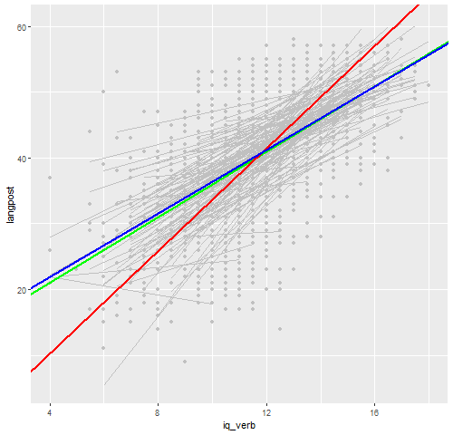

We will illustrate the analysis of clustered or panel data using three examples, two dealing with linear models and one with logits models. The linear model examples use clustered school data on IQ and language ability, and longitudinal state-level data on Aid to Families with Dependent Children (AFDC).
Snijders and Boskers (1999), Multilevel Analysis, have data for 2287 8-th grade children in 131 schools in The Netherlands. The data are available in the datasets section in a Stata file and can be read directly from Stata or R.
> library(haven)
> sn <- read_dta("https://grodri.github.io/datasets/snijders.dta")We are interested in the relationship between verbal IQ and the score in a language test. OLS gives a highly significant coefficient of 2.65 with a standard error of 0.072:
> ols <- lm(langpost ~ iq_verb, data=sn)
> coef(summary(ols)) Estimate Std. Error t value Pr(>|t|)
(Intercept) 9.528484 0.86682065 10.99245 1.995001e-27
iq_verb 2.653896 0.07215406 36.78096 5.020594e-233We consider the fact that the observations are probably correlated within each school because of unobserved school characteristics that affect language scores (such as a good language teacher).
> library(lme4)
> re <- lmer(langpost ~ iq_verb + (1 | schoolnr), data=sn, REML = FALSE)
> summary(re)Linear mixed model fit by maximum likelihood ['lmerMod']
Formula: langpost ~ iq_verb + (1 | schoolnr)
Data: sn
AIC BIC logLik deviance df.resid
15259.8 15282.7 -7625.9 15251.8 2283
Scaled residuals:
Min 1Q Median 3Q Max
-4.0958 -0.6370 0.0580 0.7069 3.1467
Random effects:
Groups Name Variance Std.Dev.
schoolnr (Intercept) 9.497 3.082
Residual 42.227 6.498
Number of obs: 2287, groups: schoolnr, 131
Fixed effects:
Estimate Std. Error t value
(Intercept) 11.16511 0.87879 12.71
iq_verb 2.48809 0.07005 35.52
Correlation of Fixed Effects:
(Intr)
iq_verb -0.937> v = as.numeric(VarCorr(re)) # variance of random effects
> v/(v + sigma(re)^2) # intra-class correlation[1] 0.1836084> -2*(logLik(ols)-logLik(re)) # LR test'log Lik.' 225.9154 (df=3)The coefficient of verbal IQ is 2.49 with a standard error of 0.071 and is still highly significant. We have also learned that the language scores are correlated within schools; in fact, 18.3% of the variation in language scores net of verbal IQ can be attributed to the schools (the rest is due to the pupils). The intra-class correlation is highly significant, as shown by a test statistic of 225.9 (conservatively a chi-squared with 1 d.f.)
We now consider a fixed-effects model that allows for the possibility of a correlation between unobserved school characteristics and verbal IQ (the school with the good teacher attracts brighter students):
To estimate a fixed-effects model in R we use the plm
package.
> library(plm)
> fe <- plm(langpost ~ iq_verb, data = sn, model = "within", index = "schoolnr")
> summary(fe)Oneway (individual) effect Within Model
Call:
plm(formula = langpost ~ iq_verb, data = sn, model = "within",
index = "schoolnr")
Unbalanced Panel: n = 131, T = 4-35, N = 2287
Residuals:
Min. 1st Qu. Median 3rd Qu. Max.
-25.76294 -4.13643 0.35211 4.55354 19.42749
Coefficients:
Estimate Std. Error t-value Pr(>|t|)
iq_verb 2.414772 0.071647 33.704 < 2.2e-16 ***
---
Signif. codes: 0 '***' 0.001 '**' 0.01 '*' 0.05 '.' 0.1 ' ' 1
Total Sum of Squares: 138670
Residual Sum of Squares: 90806
R-Squared: 0.34517
Adj. R-Squared: 0.30537
F-statistic: 1135.95 on 1 and 2155 DF, p-value: < 2.22e-16Our results are very robust, the coefficient of verbal IQ is 2.41 with a standard error of 0.071. We feel pretty confident on our conclusions. Note that we get an F-test for school effects, which are highly significant.
If you are not deterred by the ecological fallacy you could have
analyzed group means. Stata makes this easy with the be
option. We also use wls to weight schools in proportion to
the number of students (not that it makes a huge difference):
> library(dplyr)
> msn <- summarize(group_by(sn, schoolnr),
+ langpost=mean(langpost), iq_verb=mean(iq_verb), w=n())
> be <- lm(langpost ~ iq_verb, data=msn, weight = w)
> summary(be)
Call:
lm(formula = langpost ~ iq_verb, data = msn, weights = w)
Weighted Residuals:
Min 1Q Median 3Q Max
-37.879 -8.088 -1.064 7.022 28.485
Coefficients:
Estimate Std. Error t value Pr(>|t|)
(Intercept) -5.210 3.962 -1.315 0.191
iq_verb 3.899 0.334 11.674 <2e-16 ***
---
Signif. codes: 0 '***' 0.001 '**' 0.01 '*' 0.05 '.' 0.1 ' ' 1
Residual standard error: 13.26 on 129 degrees of freedom
Multiple R-squared: 0.5137, Adjusted R-squared: 0.51
F-statistic: 136.3 on 1 and 129 DF, p-value: < 2.2e-16This gives a much larger coefficient of 3.90, albeit with a larger standard error of 0.334. Clearly working with aggregate data would overestimate the relationship between verbal IQ and language scores. Note that the random-effects estimate is between the within and between estimates (it always is).
The following figure shows the data, separate regression fits for each of the 131 schools, and the between, within, and random-effects estimates. First we run the school regressions
> fits <- group_by(sn, schoolnr) |> do(lf = lm(langpost ~ iq_verb, data = .))
> sr <- data.frame(id = fits[[1]], t(sapply(fits[[2]], coef)))
> names(sr) <- c("schoolnr", "sa", "sb")
> snp <- left_join(sn, sr, by= "schoolnr") |> mutate(fv = sa + sb * iq_verb)And then we do the combined plot
> library(ggplot2)
> png("snijders.png", width=500)
> fei <- mean(sn$langpost - coef(fe)*sn$iq_verb) # intercept for fixed effects estimate
> ggplot(snp, aes(iq_verb, langpost)) + geom_point(color="#c0c0c0") +
+ geom_line( aes(iq_verb, fv, group=schoolnr), color="#c0c0c0") +
+ geom_abline(intercept=fixef(re)[1], slope=fixef(re)[2], color="green", size=1) +
+ geom_abline(intercept=coef(be)[1], slope=coef(be)[2], color="red", size=1) +
+ geom_abline(intercept=fei, slope=coef(fe), color="blue", size=1)
> dev.off()png
2 
The red line is the between-groups estimate, which overstates the relationship between IQ and language scores. The blue line is the within-groups or fixed-effects estimator. The green line is the random-effects estimator, which is always an average of the within and between, and in this case comes very close to the within-group estimator.